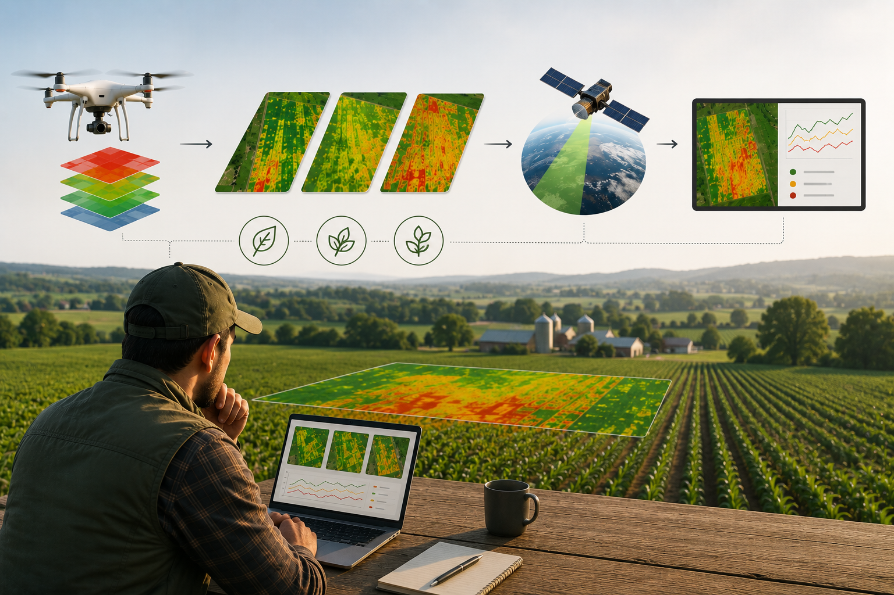
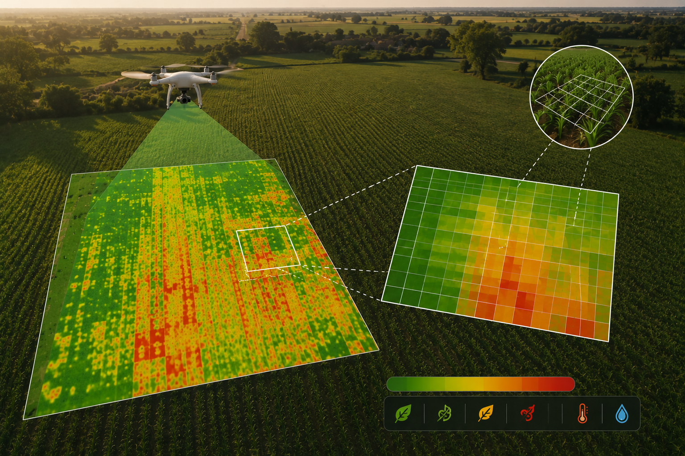
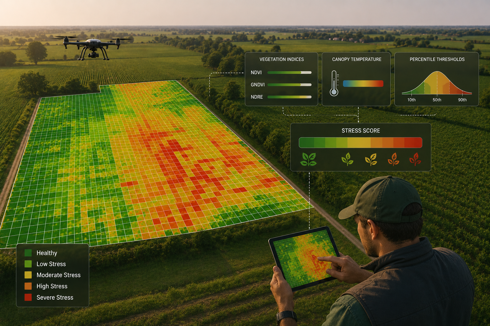

Vegetation Indices
Vegetation indices are derived from both UAV multispectral imagery and Sentinel-2 satellite observations to provide complementary information on crop conditions. The UAV imagery captures fine scale spatial variability at centimetre level resolution, allowing the identification of localized differences within the field. Sentinel-2 imagery complements this analysis by providing regular observations throughout the growing season, enabling the assessment of overall field conditions and temporal trends. Together, these datasets support both detailed local analysis and continuous large-scale crop monitoring.

Grid Aggregation
Instead of analysing millions of individual UAV pixels, the field is divided into regular grid cells and, for each cell, the average value of all vegetation indices and canopy temperature is calculated. The 1.5 × 1.5 m grid represents a compromise between spatial detail and computational efficiency. It reduces the noise associated with very high-resolution UAV imagery while preserving the within-field spatial variability required for crop monitoring

Stress Assessment
Crop stress is evaluated by combining vegetation indices and canopy temperature using percentile-based thresholds calculated for each survey. Each grid cell receives a final Stress Score ranging from healthy to highly stressed conditions. The resulting stress map provides an intuitive overview of crop variability and allows users to monitor changes throughout the growing season.